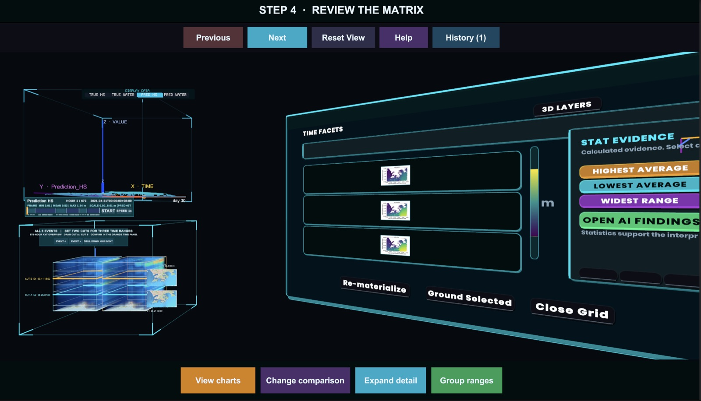
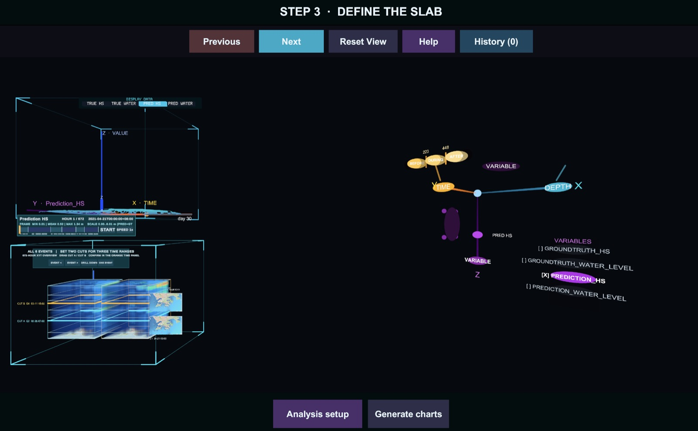

I work where visualization, interaction and perception meet: making 3D scientific data something you can question in VR, asking where AI delegation should stop, and making a robot’s camera useful on a moving body.
Cut a slab out of a space-time cube, then ask it questions.

Step 4 · Review the matrix. Left: the space-time cube with two time cuts. Right: one chart per time range, ranked by the statistics that support them.
A space-time cube puts a whole dataset in front of you at once: two axes for space, one for time, colour for the value. That is great for spotting where something happens, and awkward for the next step, when you want to ask a precise numeric question about exactly the part you are looking at.
SlabLab closes that gap. In a desktop or VR workspace built on VolumeSTCube, you choose a time range, a depth band and a variable, and the app turns that selection, the slab, into a validated data package. A local S4D analysis service checks it, MatPlotAgent turns it into Matplotlib charts, and the charts and findings come back into the same 3D scene, next to the data they describe.
It works on two kinds of data through one loader: XY + time fields, where the third axis is time, and full XYZ + time volumes such as Hong Kong coastal chlorophyll, nitrate and salinity, 30 time steps of about 400 × 441 × 92 voxels each. The loader tells them apart from the files themselves.
I was the only developer, so the work covers the whole stack: the Unity/C# workspace, the typed C#, JSON and FastAPI interfaces between the 3D view and the Python services, and the parts that make a research prototype usable by someone else: input validation, session history, clear loading errors, a one-command release check and a packaged macOS review build.
Try the slab · drag the two cuts through timesynthetic field · illustration
slab t7–t15 · mean 0.00

Step 3 · Define the slab. Time, depth and variable are three axes you compose directly; here the time axis is split into before / during / after.
Jul 2026 – now · Undergraduate Research Assistant live
Would you let your proxy say that?
Where people draw the line on AI that speaks for them in meetings.
AI proxies are agents that join a meeting for you, follow the discussion and speak in your name. They are moving from demos into real collaboration tools. The open question is no longer whether they can talk. It is what people are comfortable letting them say.
Our study treats that as a boundary with a shape. Not everything said in a meeting carries the same weight, and what feels fine to delegate in one meeting may not in another. We look at how the type of communicative act and the meeting context each influence people’s willingness to hand their participation to a proxy.
Knowing where that boundary lies matters for how such tools are built: delegation could be shaped around the kinds of contributions people are comfortable handing over, rather than a single on/off switch for “let the AI attend”.
Where is your boundary? · click a cell to decide what your proxy may sayyour answers · not study data
proxyPick a cell to hear what your proxy would say.
Can the robot see more without falling behind its own camera?
On the Booster T1, everything the robot knows about the field starts with a camera frame every 33 ms. I built the ROS 2 pipeline that shows what it detects (camera frames → inference → annotated ROS topics → Foxglove, passing all 11 detector tests), and since October I have been running the evaluation that decides which detector the robot should use.
The comparison is the team’s own D-FINE-S model against the official Booster model. On the HSLVision test set (911 images, 9,841 labelled boxes) D-FINE-S reaches AP50:95 0.780 against 0.202, but it was trained on HSLVision, so that is no verdict on a new field. On 3,574 frames of our own lab recordings it finds balls, robots and goalposts the official model misses, and also calls real people “opponent”, because it has no person class.
Speed is the other half. D-FINE-S is slower on the GPU (7.54 vs 4.76 ms), yet inside the full live ROS node, with undistortion, ground plane, radar and 500-particle localization running on 1280×720 RGB + depth, it finishes a frame in 20.90 ms against 23.05 ms, and both keep pace with the 30 Hz camera.
Much of the work is making those numbers trustworthy. Occasional ~70 ms spikes turned out to be Python garbage collection in the measurement collector, not the model; with a lighter collector every observed frame was matched (1,678 / 1,678). An earlier reading of a 22 ms CPU bottleneck came from an old evaluation script and was withdrawn. Engines are pinned by checksum, and no unfavourable sample was dropped.
One frame, stage by stage · full ROS node on the T1, live camerameasured · 2 Nov 2026
stage medians of 3 × 60 s runs per model; “other” = conversion, projection, publishing
When the baggage service says BUSY, may the bag go somewhere else?
Recorded simulator runs on a continuous conveyor layout, same router, authorized group {3, 4}, seed 1. Left: service 3 is free, the tub goes 1 → 2 → 3. Right: service 3 refuses, the router picks service 4 and the tub goes 1 → 2 → 5 → 6 → 4. Labels and the final arrival freeze frames are added to the real footage; this is simulator evidence, not a hardware run.
Quercus Airport is a baggage system built from conveyor modules that make their own routing decisions. Each module runs the routing application on one core of its microcontroller and the hardware platform on the other; neighbouring modules hand tubs to each other over a peer network, while a Raspberry Pi and a web UI only manage and log. The same application also compiles for a simulator.
A busy transit module is easy: take another path. A busy final service is not, because every path still ends at the service that refuses. The original router kept retrying that service until it recovered, while an equivalent service stood idle. The bag was never lost; it just waited.
My change lets the destination move, but only inside an explicitly trusted group of services that do the same baggage task. Eligibility comes before route cost: with no group the destination stays, and gates always follow the flight board. The refusal and the new destination travel with the tub through every handover, for 4 extra bytes and a compatible message format. Multi-BUSY tests also exposed a booking-motion bug during rerouting and a sequence-window arithmetic edge case, both fixed.
On a synthetic six-module layout with one tub and three paired seeds, the time from injection to the first service entry fell from 52.741 s to 22.790 s. Hardware runs confirmed a transit bypass; completing the new reselection on hardware, sustained load and the combined security check are still open, and the slides say so.
Replay the three cases · layout as in the videoend times from the A2 experiment · motion illustrative
sim clock 0.0 s · shown at 6× speed
Also
Jul – Aug 2025
LacAIDes
Collaboration with Xi'an Jiaotong University
An LLM-assisted workflow for contour extraction, morphology, path planning and DXF export. Co-authored the paper and contributed to the user study.
When I am not in a lab, I am on a badminton court. At GNSK 2025, the Dutch national student championships, our Team Eindhoven side won the mixed team title. I am registered with the Badminton World Federation as a player for the Netherlands.